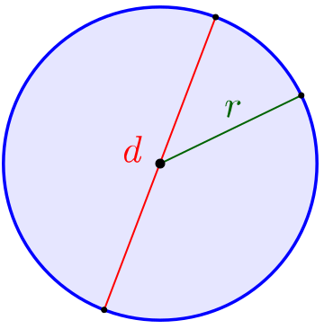

A kör
A kör vagy körvonal egy geometriai alakzat. A geometriai meghatározás szerint kör alatt a geometriai sík tér azon pontjainak halmazát értjük, amely pontok a sík egy meghatározott pontjától (középpont) adott (sugárnyi) távolságra helyezkednek el. Körlapnak, illetve körlemeznek nevezhetjük a pontoknak azon halmazát, amelyeknek a kör középpontjától mért távolsága kisebb vagy egyenlő a kör sugarával.
A kör területének kiszámítása

A kör területe a sugár négyzetének és a π-nek a szorzata. A π (pí) egy irracionális, sőt transzcendens szám, tehát egy nem szakaszos, tizedes tört. Az értéke megközelítőleg 3,14.
Ebből kiszámítva a képlet így néz ki: r2 * π